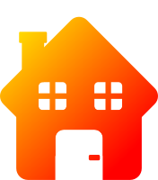

Friday Voice Assistant
Ingen väcknings fras
Friday är en no-wake-word personlig assistent. Friday behöver
inte väckas upp av något namn för att börja utföra ting,
istället kan Friday hela tiden lyssna efter nyckelfraser och
utföra sin uppgift så fort någon sådan fras hörs. Exempelvis
kan Friday tända lampor hemma när "Tänd ljuset" sägs - eller
släcka vid "Släck ljuset".
Snabb
Friday är snabb, friday körs bara på enheten den är
installerad på. Internet baserade assistants kan bli tröga
vid långsamt internet, inte Friday. Friday reagerar snabbt
eftersom dina uttalanden inte behöver skickas till någon
extern server för att processeras, allt sker på enheten.
Säker
Friday värnar om din rätt att äga din egen data. Friday körs
bara på enheten den är installerad på, din röst skickas inte
till något måln. Dessutom så sparar friday endast de senaste
10 sekunderna av inspelningen. Så efter att 10 sekunder har
gått är allt som tidigare sagts överskrivet och borta för
alltid.